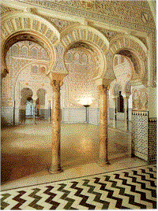

| Potuguese Tiles
by Museum of Azulejos, Lisbon
The book Portuguese Tiles from the National Museum of Azulejos,
Lisbon gives us a fascinating insight into the history of Iberian
Tiles in genral and Portuguese Tiles in particular. Azulejos are
glazed polychrome tiles. The book also covers the history of the
tile museum itself, which dates back to a convent founded in the
early 16th C by Quenn Leonor of Portugal.
The
three main sections are 'The History of the Museum', 'The History
of the Collection', and 'The Collection'. The collection itself
extends from the 15th C to the present day, although the emphasis
is on the period 16th-19th century.
Tiles have a long history. The origins of Portuguese Tiles -'Azulejos'
- can be traced back to the 15th C, when they were used throughout
Portugal and its dominions, e.g. Brazil. Tiles are manifest in many
places in Portugal: the palaces of Sintra or Fronteira, the Cloister
of Oporto Cathedral or on the streets of Caldas da Rainha, to name
a few. Iberian tiles are in evidenve in the three great Iberian
cities of Grnada, Seville and Valencia. The designs from the 15th
C onwards consiist of crosses, squares hexagons etc. and may have
been influenced by Islamic traditions from North Africa.
Image courtesy of Ceramic
Tiles from Spain
Related Pages:
Ceramic Tiles on the Web
Printing Ceramics on Tiles
More Reviews
|